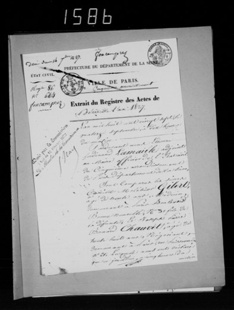
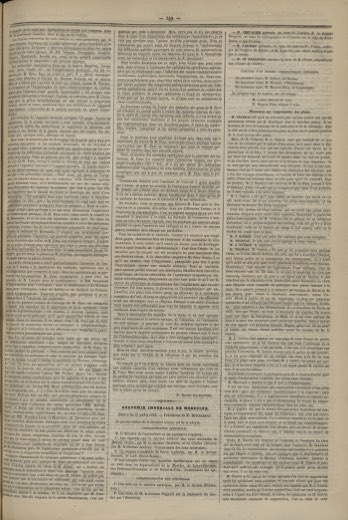
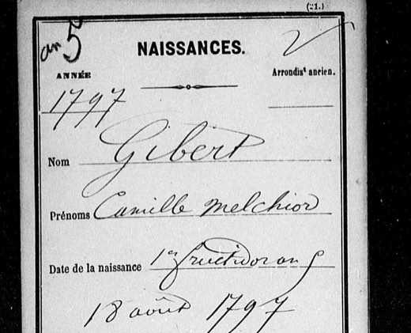

Côté Dubart
Camille Melchior Gibert
Né en 1797 à ParisMort en 1866 à Paris
Fils de Marin François GIBERT. Interne/externe, médecin du Bureau de charité, agrégé 1827.
Récit
Camille Melchior Gibert naît à Paris le 1er fructidor an V, soit le 18 août 1797, à 5 h du matin, rue du Faubourg-Poissonnière n° 31 (3e arrondissement ancien, division Poissonnière). L'acte de naissance, lu dans un extrait de la seconde minute, le dit fils de François Marin Gibert, « employé à la Poste », et de Marie Catherine Foucamprez, son épouse, mariés le 18 frimaire an II (8 décembre 1793), d'après l'acte lui-même. Deux témoins : Jean Claude Paris, 62 ans, employé, rue des Vieux-Augustins, et Charlotte Aimée Lique [?], 33 ans, rentière, domiciliée dans la maison de l'accouchée ; aucun lien de parenté n'est dit. La date concorde avec l'acte de mariage de 1828 et avec la brochure de juin 1833 où il se présente comme « né à Paris le 18 août 1797 » (une base de données en ligne donne le 18 septembre, sans pièce). Le père est « employé à la Poste » en 1797, « pensionnaire de l'État » en 1828 et mort à la Manufacture des tabacs en 1829 ; la fiche de son père garde ces mentions côte à côte, sans les trancher. Camille naît dans le faubourg Poissonnière, rue qu'il habitera de nouveau à la fin de sa vie (n° 104) ; l'acte ne dit rien de plus de l'enfance. Ses grands-parents maternels sont Adrien Foucamprez et Catherine Colin, rue du Sépulcre à Paris en 1771 ; les paternels, François Gibert, maître mercier, et Marie Jeanne Dolhain. Sa mère, Marie Catherine Foucamprez, meurt le 14 septembre 1827 au 31 boulevard Bonne-Nouvelle, où il demeure aussi ; il déclare le décès, avec un négociant, Joseph Pierre Bernard Chauvet, dont le lien avec la famille n'est pas dit. Sa sœur cadette est Marie Octavie. Le 4 octobre 1828, à Paris, il est médecin, demeure rue de Cléry 41, et épouse Marie Françoise Thaïs Dubart, rentière, née au Quesnel en 1798. Octavie a épousé le frère de Thaïs, Louis Charles Ambroise Dubart : les deux familles sont doublement liées. En 1836, il est le parrain de son neveu Edmond Dubart, qui le dit domicilié rue du Sentier 18.
Il est le dermatologue Camille-Melchior Gibert (1797-1866), de l'hôpital Saint-Louis et de l'Académie de médecine. L'identification est établie par la confirmation de la famille, recoupée par la presse médicale de 1866 : le mari de Thaïs, mort le 30 juillet 1866 à 68 ans, docteur et chevalier de la Légion d'honneur, correspond au Gibert dont la Gazette des hôpitaux rend compte des obsèques ; aucun acte ne relie directement les deux, et la presse ne donne ni prénom ni épouse. Sa carrière, il la raconte lui-même en 1833 et en 1839 : sept ans d'internat et d'externat à l'Hôtel-Dieu et à Saint-Louis, agrégé de la Faculté reçu premier en 1827 (un autre document dit 1824 : les deux ne s'accordent pas), des cours pratiques de maladies de la peau chaque année depuis 1827, l'un des quatre propriétaires de la Revue médicale en 1833. Il dit avoir assuré des services à Saint-Louis pendant l'épidémie de choléra de 1832 et fait des leçons cliniques à l'hôpital pendant les vacances de cette année-là. En 1839, la page de titre de son Traité le dit médecin de l'hôpital de Lourcine (ouvert en 1836 pour les femmes atteintes de maladies vénériennes), professeur agrégé, et déjà chevalier de la Légion d'honneur ; le dossier de la Légion d'honneur n'a pas pu être ouvert. Selon une notice secondaire, non vérifiée sur pièces, il est élu à l'Académie de médecine en 1847 puis secrétaire annuel de 1849 à 1854. Cadre commun de l'époque : un médecin des hôpitaux de peau partageait sa vie entre salles communes, enseignement, livres et clientèle de ville ; la syphilis, soignée au mercure et aux bains, touchait tous les milieux. Ce que Camille faisait au jour le jour, aucun document ne le dit.
Côté adresses, un almanach de 1864 liste un « Gibert », de l'Académie de médecine, faubourg Poissonnière 104 ; d'après le Bottin, rue du Sentier 18 jusqu'en 1851, puis faubourg Poissonnière 30 puis 104 (lectures non relues). Le 10 mai 1856, avec sa femme, il fait transcrire l'achat d'un immeuble de 80 000 francs ; l'adresse n'est pas dite, et l'hypothèse qu'il s'agit du 104 reste non résolue. Ses moyens réels, aucun document ne les donne : contrat de mariage et testament n'ont pas été consultés. Les seuls indices de la base sont le métier, la Légion d'honneur, ce mot de « rentière » appliqué à Thaïs en 1828 (il dit un état, non l'importance d'une fortune) et cet immeuble. Cadre d'époque, non un fait sur les Gibert : pour un bourgeois de Paris, un immeuble était un placement classique, qui rapportait des loyers, et les ménages de médecins en vue employaient en général du personnel ; on ne sait pas si l'immeuble était loué ni si les Gibert avaient une domestique.
Il meurt le 30 juillet 1866 au 104 rue du Faubourg-Poissonnière (10e), à 68 ans ; son fils Henri, employé de commerce, et son neveu Edmond Dubart déclarent le décès. Edmond donne dans l'acte la même adresse que son oncle, le 104 ; l'acte ne dit pas qu'il logeait chez lui, et « même adresse » ne dit pas « même logement ». Louis, son père, veuf, n'apparaît pas dans l'acte. La veuve, Thaïs, y est nommée ; c'est la dernière fois qu'on la voit : on ne sait ni quand ni où elle est morte. La Gazette des hôpitaux et le président de l'Académie, le 31 juillet, disent qu'il a été emporté par une attaque de choléra, ce que l'arbre familial rapportait déjà sans preuve ; la cause vient donc de la presse, non de l'acte. Paris traversait alors sa seconde vague de choléra : une carte municipale compte 705 décès du 21 au 27 juillet 1866, soit une centaine par jour, après quelque 6 000 morts à l'automne 1865 (ordre de grandeur). C'est le cadre de ses derniers jours, et la mort d'un médecin de 68 ans entre dans les âges que les statistiques de 1865 montraient les plus exposés ; mais où et comment il a été atteint, aucun document ne le dit, et l'on ne sait pas s'il soignait des cholériques. Il avait connu 1832, 1849 et 1853-54 : on ne connaissait pas encore la cause de la maladie. L'hôpital Lariboisière, qui recevait des cholériques, se trouvait près de la barrière Poissonnière, mais la distance au 104 n'est pas mesurée. Les obsèques ont lieu vers le 1er août, avec des discours de Tardieu et de Hardy ; Tardieu le dit entouré de « sa famille dont il avait le culte » ; l'inhumation serait au « nouveau cimetière du Nord ». Une notice indique le 2 août pour le décès, date contredite par l'acte. Les liens entre le 104 et l'installation de Louis Dubart dans l'immeuble restent une hypothèse.
Sa succession est déclarée le 21 août 1866 (n° 932, 9e bureau de l'Enregistrement) : la table ne nomme aucun héritier, indique un mobilier lu « 2 000 » [?] et aucun immeuble ; le détail est dans le registre des déclarations, non numérisé. On ne peut rien en conclure sur l'immeuble de 80 000 francs acheté en 1856. Hypothèses seulement, non vérifiées : qu'il ait été vendu ou transmis avant 1866, qu'il ait appartenu à Thaïs ou à un autre titulaire, qu'il ne figure pas dans la table, ou que la lecture du montant soit fausse. À chercher : le registre des déclarations de 1866, son dossier de Légion d'honneur, son testament, la mère d'Henri.
Récit rédigé le 11 novembre 2026 à partir de la base, qui fait foi. Chaque marque ouvre la preuve du passage.
Famille
Frères et sœurs
Autres liens dits par les actes
- Edmond DUBART — Camille est « oncle » de cette personne
- Edmond DUBART — Camille est « oncle » de cette personne (témoin)
- Edmond DUBART — neveu (déclarant)
- Louis Charles Ambroise DUBART — Camille est « beau-frère » de cette personne
Sa vie dans le temps
- Première République
- Camille Melchior Gibert, né à Paris (3e) le 1er fructidor an V (18/08/1797), est fils de François Marin Gibert, pensionnaire de l'État, et de Marie Catherine Foucamprez, décédée à Paris (5e) le 14/09/1827 — Paris vérifié
- Camille Melchior Gibert est né à Paris le 18 août 1797 (et non le 18 septembre) — Paris partiellement vérifié
- Dans une brochure qu'il publie en juin 1833, le Dr C.-M. Gibert se présente lui-même comme « né à Paris le 18 août 1797 » — Paris vérifié
- Wikidata donne pour Camille-Melchior Gibert deux dates de naissance (18 septembre et 18 août 1797), né dans l'ancien 3e arrondissement de Paris, mort le 30 juillet 1866 — Paris non vérifié
- Camille Melchior Gibert naît le 1er fructidor an V (18 août 1797) à 5 h du matin, rue du Faubourg-Poissonnière n° 31, 3e arrondissement ancien de Paris (division Poissonnière) — Paris vérifié
- Camille Melchior est fils de François Marin Gibert, « employé à la Poste », et de Marie Catherine Foucamprez, son épouse — Paris vérifié
- Baptême — selon l'arbre transmis non vérifié
- Restauration
- Carrière hospitalière et universitaire : interne de Biett à Saint-Louis 1818-1819, docteur 1822 (thèse « Quelques réflexions sur la médecine moderne »), agrégé 1824, hôpital de Lourcine 1836 — Paris non vérifié
- Domicile : 3 ou 31 boulevard Bonne Nouvelle à Paris — selon l'arbre transmis non vérifié
- Le dermatologue a été interne et externe des hôpitaux de Paris (Hôtel-Dieu et Saint-Louis) pendant sept ans, médecin du Bureau de charité du Ve arrondissement pendant huit ans, agrégé de la Faculté de Paris reçu premier au concours de 1827 — Paris partiellement vérifié
- Gibert enseigne les maladies de la peau par cours pratiques annuels depuis 1827 (douze ans en 1839) et écrit avoir observé plus de deux mille malades — Paris partiellement vérifié
- En septembre 1827, le médecin Camille Melchior Gibert demeure 31 boulevard Bonne-Nouvelle, dans la maison où meurt sa mère — Paris vérifié
- Domicile : demeure au 41 rue de Cléry à son mariage — selon l'arbre transmis non vérifié
- Camille Melchior Gibert et Marie Françoise Thaïs Dubart se marient à Paris (ancien 3e) le 4 octobre 1828 ; lui, médecin, rue de Cléry 41 ; elle, rentière, née au Quesnel le 3 ventôse an VI (21/02/1798) — Paris vérifié
- Monarchie de Juillet
- Profession : GiBERT (Camille-Melchior), dermatologiste français, né à Paris en 1797, mort à Paris le 30 juil. 1866. — selon l'arbre transmis non vérifié
- En 1833 Gibert déclare avoir assuré des services temporaires à l'hôpital Saint-Louis, notamment pendant l'épidémie de choléra de 1832, et fait des leçons cliniques à Saint-Louis pendant les vacances de 1832 — Paris partiellement vérifié
- Gibert est l'un des quatre rédacteurs-propriétaires de la Revue médicale (avec Bayle, Cayol, Martinet) en 1833 — Paris partiellement vérifié
- Le dermatologue est domicilié rue du Sentier 18 en 1834 (Guyot, d'après FactGrid) — Paris non vérifié
- Domicile : 18 rue du Sentier (Paris, 2ème) — selon l'arbre transmis — Paris non vérifié
- Sur la page de titre de 1839, Gibert est médecin de l'hôpital de Lourcine, professeur agrégé, professeur particulier de pathologie cutanée, interne de Saint-Louis en 1819, médecin de service à Saint-Louis en remplacement de Biett, Manry [?] et Lugol de 1831 à 1835, chevalier de la Légion d'honneur — Paris partiellement vérifié
- La page de titre du Traité de 1839 et la liste des ouvrages (Manuel des maladies vénériennes 1837, Recherches sur les ulcérations du col de la matrice 1837, Dictionnaire de médecine usuelle 1836 avec Bayle) fixent la chronologie de ses publications — Paris partiellement vérifié
- Selon le Bottin, le Dr Gibert, médecin de l'hôpital Saint-Louis, demeure rue du Sentier 18 jusqu'en 1851, 30 faubourg Poissonnière de 1852 à 1856, puis 104 faubourg Poissonnière de 1858 à 1864 au moins — Paris partiellement vérifié
- Domicile : 18 rue du Sentier selon liste électorale (Paris, 3ème) — selon l'arbre transmis — Paris non vérifié
- Selon la notice CTHS, Gibert est élu à l'Académie de médecine (section de thérapeutique) le 9 mars 1847 ; secrétaire annuel 1849-1854 ; secrétaire de l'Association des médecins de la Seine — Paris non vérifié
- Second Empire
- L'immeuble acquis par les Gibert le 10 mai 1856 (80 000 F) est probablement le 104 faubourg Poissonnière, où ils s'installent entre 1856 et 1858 et où vivront ensuite Edmond (1866) et Louis Dubart (1868-1871) — Paris non résolu
- Le 10 mai 1856, Camille Melchior Gibert, docteur en médecine, et sa femme Thaïs Dubart, alors domiciliés 30 faubourg Poissonnière, font transcrire une acquisition immobilière de 80 000 F à Paris ; des inscriptions de créance grèvent le bien le même jour (80 000), le 28/10 [?] 1869 (41 000) et le 16/09/1879 (11 000) — Paris vérifié
- Domicile : 104 rue du Faubourg Poissonière (Paris) — selon l'arbre transmis — Paris non vérifié
- Le Camille Melchior Gibert de l'arbre est probablement l'académicien, médecin des hôpitaux — Paris partiellement vérifié
- L'Almanach impérial 1864 liste un « Gibert ✱, Ac. de méd. ; méd. hon. des hôp., faub. Poissonnière, 104 » — Paris vérifié
- Camille Melchior Gibert, docteur médecin, chevalier de la Légion d'honneur, 68 ans, meurt le 30 juillet 1866 au domicile conjugal, 104 rue du Faubourg-Poissonnière (10e) ; époux de Charlotte Françoise Thaïs Dubart, 67 ans ; déclarants : son fils Henri Gibert, 30 ans, employé de commerce, et son neveu Edmond Dubart, 30 ans, employé, tous deux domiciliés 104 faubourg Poissonnière — Paris vérifié
- Un dossier Léonore de Camille Melchior Gibert est possible : l'acte de 1866 le dit chevalier de la Légion d'honneur et il est mort avant 1977 ; non vérifié — Paris non résolu
- À la séance de l'Académie impériale de médecine du 31 juillet 1866, le président annonce la mort de M. Gibert, emporté par une attaque de choléra — Paris vérifié
- Thaïs Dubart, veuve de Camille Melchior Gibert : dernière mention connue le 31/07/1866 (acte de décès de son mari, A0251) ; date et lieu de son décès non établis — Paris non résolu
- Les obsèques du docteur Gibert ont lieu un mercredi matin (le 1er août 1866 selon le calendrier) ; Tardieu parle pour l'Académie, Hardy pour les médecins de Saint-Louis ; inhumation au « nouveau cimetière du Nord » — Paris partiellement vérifié
- La notice CTHS donne le décès au 2 août 1866, date contredite par l'acte de décès (30 juillet) — Paris contredit
- Le discours de Tardieu dit Gibert entouré de « sa famille dont il avait le culte », de clients choisis, et de plus de quarante ans de service hospitalier — Paris non vérifié
- Une succession de Camille Melchior Gibert, docteur médecin, décédé le 30 [juillet 1866] au 104 faubourg Poissonnière, a été déclarée le 21 août 1866 sous le n° 932 au 9e bureau de l'Enregistrement — Paris partiellement vérifié
Lieux
- Paris 40 mentions
Documents (27)








Autres sources citées
- Almanach-Bottin et Didot-Bottin du commerce de Paris, 1846-1864 : entrées « Gibert, médecin de l'hôpital Saint-Louis » (recherche plein texte OCR, Gallica) Annuaire, almanach · BnF, Gallica · cb32698036g ; cb32695639f
- Témoignage de Jessica (propriétaire du projet, famille Dubart) : l'époux de Thaïs Dubart est le dermatologue Camille-Melchior Gibert Document de famille · Mémoire familiale
- Wikipédia, « Camille-Melchior Gibert » Site web
- en.wikipedia / FactGrid, Camille-Melchior Gibert (naissance 18 septembre) Site web
- CTHS, La France savante, notice GIBERT Camille Melchior (d'après Académie nationale de médecine) Site web · CTHS · id 3675
- FactGrid, Camille Melchior Gibert (Q269677) Site web · FactGrid · Q269677
- Guyot, Statistique des lettres et des sciences en France, 1834-1835 (entrée Gibert, médecin) Livre, ouvrage · non localisé
- C.-M. Gibert, Considérations sur l'hippocratisme et l'anatomisme (extrait de la Revue médicale, juin 1833), avec « Titres du Dr Gibert (Camille-Melchior), né à Paris le 18 août 1797 » Livre, ouvrage · Wellcome Library via Internet Archive · b30374637
- C.-M. Gibert, Traité pratique des maladies spéciales de la peau, 2e éd., Paris, Germer Baillière, 1839 : page de titre et avant-propos Livre, ouvrage · Wellcome Library via Internet Archive · b28749698
- Wikidata Q2934839, Camille-Melchior Gibert (entité JSON) Site web · Wikimedia · Q2934839
- Base Léonore, dossier Légion d'honneur de Gibert Camille Melchior (2e tentative : API de recherche) Base collaborative · Archives nationales · cote inconnue
Ce qu'on ignore
Lieu de décès de Camille Melchior Gibert : Paris 1er selon l'arbre, Paris 10e selon Wikipédia.
non résolu Paris 1er ; Paris 10e · A0097
Divergence sur la date de naissance de C.M. Gibert : 18 août (arbre, fr.wikipédia) ou 18 septembre (en.wikipedia, FactGrid d'après résumé)
non résolu seul l'acte tranche ; TRANCHÉE le 02/11/2026 par l'acte de naissance A0511 (18 août 1797) : la variante 18 septembre n'est pas confirmée par l'acte · A0126
L'immeuble acquis par les Gibert le 10 mai 1856 (80 000 F) est probablement le 104 faubourg Poissonnière, où ils s'installent entre 1856 et 1858 et où vivront ensuite Edmond (1866) et Louis Dubart (1868-1871)
non résolu le répertoire hypothécaire ne nomme pas le bien ; Gibert peut avoir acheté un immeuble de rapport et loué au 104 · A0261
La notice CTHS donne le décès au 2 août 1866, date contredite par l'acte de décès (30 juillet)
contredit origine de la date inconnue · A0486
Un dossier Léonore de Camille Melchior Gibert est possible : l'acte de 1866 le dit chevalier de la Légion d'honneur et il est mort avant 1977 ; non vérifié
non résolu cote, date de nomination et pièces d'état civil inconnues ; Léonore ne couvre que les dossiers conservés · A0510
C.M. Gibert de l'arbre = académicien de 1864 ?
partiel · 2026-10-29 — [résultat déclaré : trouve (partiel)] probable (adresse + titres), pas établi ; lien aux Dubart/à P8800 non établi Pistes : acte de mariage 1828 (Saint-Eustache / 3e), décès 1866, Léonore, CTHS, thèse 1822 · R0030
Accès Gallica, Léonore, CTHS
archives inaccessibles · 2026-10-29 — consigné Pistes : rouvrir via navigateur ; ne pas contourner · R0034
Dossier Léonore de Camille Melchior Gibert
archives inaccessibles · 2026-11-02 — API de recherche en 403 (non contournée) ; non établi Pistes : rouvrir via navigateur ; chercher « Gibert » né 1797 Paris, cote LH/… · R0134
Date de naissance : 18 août ou 18 septembre 1797
partiel · 2026-11-02 — 18 août soutenu par l'acte de mariage (base) et CTHS ; 18 septembre non étayé ; acte de naissance non lu Pistes : Archives de Paris : naissance 1er fructidor an V (3e ancien) · R0135
Thèse 1822, Dechambre, Bulletin de l'Académie 1866, Guyot 1834
infructueuse · 2026-11-02 — non localisés ouverts ; rien ne donne l'épouse ou le père Pistes : BIU Santé/Medica (thèse 1822) ; Gallica via navigateur ; Dechambre 4e série t. 9 · R0136
Acte de naissance 1797, mariage 1828, contrat, succession 1866 (Archives de Paris)
en cours · 2026-11-02 — non tentée dans cette session (site non ouvert sans navigateur) Pistes : état civil reconstitué ; DQ7/DQ8 10e arr. 1866 ; Minutier central · R0138
Ouvrages de Gibert en texte intégral : préfaces, dédicaces, adresse, famille
partiel · 2026-11-02 — Deux ouvrages lus (1833, 1839) : bonne trace de carrière et la date de naissance de sa propre plume ; aucune dédicace, aucune adresse, aucune mention d'épouse ou d'enfants Pistes : Manuel 1834 (Gallica/Google Books), Traité 1860 (3e éd.), thèses 1824/1826 (page de titre, dédicace éventuelle), thèse de doctorat 1822 (BIU Santé non localisée) · R0148
Thèse de doctorat de 1822 (page de titre, dédicace)
infructueuse · 2026-11-02 — non localisée en ligne dans archive.org Pistes : BIU Santé / Medica (data.bium.univ-paris5.fr, catalogue des thèses), Sudoc, BnF · R0149
Bulletin de l'Académie de médecine t. XXXI (1865-66), Union médicale, Gazette médicale de Paris 1866, Dechambre
en cours · 2026-11-02 — non tentée à fond : seule la recherche archive.org par titre a été faite, sans résultat Pistes : Gallica (souvent 403), BIU Santé ; Dechambre sur archive.org (UOsciencesmedicales*), identifier le tome de la lettre G de la 4e série · R0150
Association des médecins de la Seine, Annuaire médical, adresses successives
infructueuse · 2026-11-02 — aucun résultat pertinent trouvé par recherche de titre Pistes : Annuaire général des médecins de Paris, Bottin (déjà S0159), Almanach royal · R0151
Wikipédia fr (renvois bibliographiques), Larousse, Vapereau, Moniteur, Débats, Ricord/Cazenave polémiques, patients célèbres, Thaïs, Henri, fortune
en cours · 2026-11-02 — non faites Pistes : reprendre dans une autre session ; Wikisource (Vapereau, Larousse), Gallica · R0152
Dossier Léonore (cote LH/19800035) de Gibert : 2e tentative et données ouvertes
archives inaccessibles · 2026-11-02 — API 403 ; aucun jeu de données ouvert Léonore sur data.gouv.fr ; cote non établie Pistes : navigateur ; almanachs impériaux (liste de la Légion d'honneur) · R0153
Académie nationale de médecine : dossier de membre, notice
infructueuse · 2026-11-02 — la recherche du site ne donne aucune notice sur Gibert Pistes : archives de l'Académie (sur place), Index 1820-1990 p. 87 · R0154
Wikidata/BnF : identifiants et dates
partiel · 2026-11-02 — pas d'identifiant Léonore ; naissance ancien 3e confortée ; dates divergentes Pistes : data.bnf.fr notice 16157946p à ouvrir · R0155
FranceArchives, Geneanet
archives inaccessibles · 2026-11-02 — JavaScript / 403 Pistes : navigateur · R0156
Inhumation d'août 1866 (Montmartre ?)
en cours · 2026-11-02 — sondage de quelques fiches, registre d'août 1866 non localisé Pistes : moteur Archives de Paris ; APPL ; landrucimetieres · R0157
AP-HP, AN AJ/16 (Faculté), Minutier central, successions 1866, naissance 1797, recensements
en cours · 2026-11-02 — non tentés en ligne (moteurs sans navigateur ; quota de recherche atteint) Pistes : voir rapport §6 · R0158
Succession de Camille Melchior Gibert (1866) : fichier 1858-1899
infructueuse · 2026-11-02 — Pas de fiche au nom de Camille Melchior ni d'Octavie dans DQ7 12885 Pistes : Registre des déclarations du 9e bureau, 21/08/1866 n° 932 (salle de lecture) · R0161
Dossier Léonore de Camille Melchior Gibert
infructueuse · 2026-11-02 — 63 légionnaires Gibert listés (pages 1-4) ; aucun Camille Melchior ni Melchior ; l'acte de décès de 1866 le dit chevalier de la Légion d'honneur Pistes : Dossier LH peut être classé sous une autre graphie ou ne pas être indexé ; demander aux AN ; annuaire de la Légion d'honneur 1866 ; Almanach impérial · R0163
Continuer l'exploration
Dossier complet : toutes les informations et leurs sources
Identification etablie : Camille-Melchior Gibert (1797-1866), dermatologue de l'hôpital Saint-Louis (Wikipédia) — ÉTABLIE le 02/11/2026 sur décision de Jessica (propriétaire du projet) : le dermatologue est bien l'époux de Thaïs Dubart, « plusieurs fois vérifié et su dans la famille » (S0216, confirmation familiale sans pièce). Renforcée par la Gazette des hôpitaux 1866 (A0482-A0483) et l'adresse 104 fbg Poissonnière. L'acte de mariage de 1828 ne dit pas qu'il est le dermatologue. Contradictions conservées : âge 68/69, naissance 18 août/18 septembre, Saint-Louis 1831/1840. Ancienne raison (candidate, 27/10/2026) : Mêmes nom, prénoms et dates de naissance et de décès. Aucun document ne relie le médecin à la famille DUBART (son épouse n'est citée nulle part). À établir par l'acte de mariage de 1828 (document de la famille non consulté). Possible dépendance : l'arbre a pu reprendre ses dates de Wikipédia ; la concordance n'est pas indépendante tant que la source de l'arbre n'est pas connue. La discordance sur l'arrondissement de décès (1er / 10e) laisse penser à une source différente, sans le prouver.
Biographie
Récit rédigé le 2026-11-11 à partir de la base, qui fait foi. Les crochets renvoient aux assertions (onglet Toutes les informations).
Camille Melchior Gibert naît à Paris le 1er fructidor an V, soit le 18 août 1797, à 5 h du matin, rue du Faubourg-Poissonnière n° 31 (3e arrondissement ancien, division Poissonnière). L'acte de naissance, lu dans un extrait de la seconde minute, le dit fils de François Marin Gibert, « employé à la Poste », et de Marie Catherine Foucamprez, son épouse, mariés le 18 frimaire an II (8 décembre 1793), d'après l'acte lui-même [A0511, A0512, A0513]. Deux témoins : Jean Claude Paris, 62 ans, employé, rue des Vieux-Augustins, et Charlotte Aimée Lique [?], 33 ans, rentière, domiciliée dans la maison de l'accouchée ; aucun lien de parenté n'est dit [A0514]. La date concorde avec l'acte de mariage de 1828 et avec la brochure de juin 1833 où il se présente comme « né à Paris le 18 août 1797 » (une base de données en ligne donne le 18 septembre, sans pièce) [A0231, A0485, A0502, A0509]. Le père est « employé à la Poste » en 1797, « pensionnaire de l'État » en 1828 et mort à la Manufacture des tabacs en 1829 ; la fiche de son père garde ces mentions côte à côte, sans les trancher. Camille naît dans le faubourg Poissonnière, rue qu'il habitera de nouveau à la fin de sa vie (n° 104) ; l'acte ne dit rien de plus de l'enfance. Ses grands-parents maternels sont Adrien Foucamprez et Catherine Colin, rue du Sépulcre à Paris en 1771 ; les paternels, François Gibert, maître mercier, et Marie Jeanne Dolhain [A0556, A0563, A0564]. Sa mère, Marie Catherine Foucamprez, meurt le 14 septembre 1827 au 31 boulevard Bonne-Nouvelle, où il demeure aussi ; il déclare le décès, avec un négociant, Joseph Pierre Bernard Chauvet, dont le lien avec la famille n'est pas dit [A0560, A0561]. Sa sœur cadette est Marie Octavie [A0237]. Le 4 octobre 1828, à Paris, il est médecin, demeure rue de Cléry 41, et épouse Marie Françoise Thaïs Dubart, rentière, née au Quesnel en 1798 [A0230]. Octavie a épousé le frère de Thaïs, Louis Charles Ambroise Dubart : les deux familles sont doublement liées [A0236]. En 1836, il est le parrain de son neveu Edmond Dubart, qui le dit domicilié rue du Sentier 18 [A0257].
Il est le dermatologue Camille-Melchior Gibert (1797-1866), de l'hôpital Saint-Louis et de l'Académie de médecine. L'identification est établie par la confirmation de la famille, recoupée par la presse médicale de 1866 : le mari de Thaïs, mort le 30 juillet 1866 à 68 ans, docteur et chevalier de la Légion d'honneur, correspond au Gibert dont la Gazette des hôpitaux rend compte des obsèques ; aucun acte ne relie directement les deux, et la presse ne donne ni prénom ni épouse [A0491, A0484, A0125, A0096]. Sa carrière, il la raconte lui-même en 1833 et en 1839 : sept ans d'internat et d'externat à l'Hôtel-Dieu et à Saint-Louis, agrégé de la Faculté reçu premier en 1827 (un autre document dit 1824 : les deux ne s'accordent pas), des cours pratiques de maladies de la peau chaque année depuis 1827, l'un des quatre propriétaires de la Revue médicale en 1833 [A0503, A0506, A0507, A0488]. Il dit avoir assuré des services à Saint-Louis pendant l'épidémie de choléra de 1832 et fait des leçons cliniques à l'hôpital pendant les vacances de cette année-là [A0504]. En 1839, la page de titre de son Traité le dit médecin de l'hôpital de Lourcine (ouvert en 1836 pour les femmes atteintes de maladies vénériennes), professeur agrégé, et déjà chevalier de la Légion d'honneur ; le dossier de la Légion d'honneur n'a pas pu être ouvert [A0505, A0510]. Selon une notice secondaire, non vérifiée sur pièces, il est élu à l'Académie de médecine en 1847 puis secrétaire annuel de 1849 à 1854 [A0487]. Cadre commun de l'époque : un médecin des hôpitaux de peau partageait sa vie entre salles communes, enseignement, livres et clientèle de ville ; la syphilis, soignée au mercure et aux bains, touchait tous les milieux. Ce que Camille faisait au jour le jour, aucun document ne le dit.
Côté adresses, un almanach de 1864 liste un « Gibert », de l'Académie de médecine, faubourg Poissonnière 104 ; d'après le Bottin, rue du Sentier 18 jusqu'en 1851, puis faubourg Poissonnière 30 puis 104 (lectures non relues) [A0124, A0260]. Le 10 mai 1856, avec sa femme, il fait transcrire l'achat d'un immeuble de 80 000 francs ; l'adresse n'est pas dite, et l'hypothèse qu'il s'agit du 104 reste non résolue [A0249, A0261]. Ses moyens réels, aucun document ne les donne : contrat de mariage et testament n'ont pas été consultés. Les seuls indices de la base sont le métier, la Légion d'honneur, ce mot de « rentière » appliqué à Thaïs en 1828 (il dit un état, non l'importance d'une fortune) et cet immeuble. Cadre d'époque, non un fait sur les Gibert : pour un bourgeois de Paris, un immeuble était un placement classique, qui rapportait des loyers, et les ménages de médecins en vue employaient en général du personnel ; on ne sait pas si l'immeuble était loué ni si les Gibert avaient une domestique.
Il meurt le 30 juillet 1866 au 104 rue du Faubourg-Poissonnière (10e), à 68 ans ; son fils Henri, employé de commerce, et son neveu Edmond Dubart déclarent le décès. Edmond donne dans l'acte la même adresse que son oncle, le 104 ; l'acte ne dit pas qu'il logeait chez lui, et « même adresse » ne dit pas « même logement ». Louis, son père, veuf, n'apparaît pas dans l'acte. La veuve, Thaïs, y est nommée ; c'est la dernière fois qu'on la voit : on ne sait ni quand ni où elle est morte [A0251, A0252, A0795]. La Gazette des hôpitaux et le président de l'Académie, le 31 juillet, disent qu'il a été emporté par une attaque de choléra, ce que l'arbre familial rapportait déjà sans preuve ; la cause vient donc de la presse, non de l'acte [A0482, AR0111]. Paris traversait alors sa seconde vague de choléra : une carte municipale compte 705 décès du 21 au 27 juillet 1866, soit une centaine par jour, après quelque 6 000 morts à l'automne 1865 (ordre de grandeur). C'est le cadre de ses derniers jours, et la mort d'un médecin de 68 ans entre dans les âges que les statistiques de 1865 montraient les plus exposés ; mais où et comment il a été atteint, aucun document ne le dit, et l'on ne sait pas s'il soignait des cholériques. Il avait connu 1832, 1849 et 1853-54 : on ne connaissait pas encore la cause de la maladie. L'hôpital Lariboisière, qui recevait des cholériques, se trouvait près de la barrière Poissonnière, mais la distance au 104 n'est pas mesurée. Les obsèques ont lieu vers le 1er août, avec des discours de Tardieu et de Hardy ; Tardieu le dit entouré de « sa famille dont il avait le culte » ; l'inhumation serait au « nouveau cimetière du Nord » [A0483, A0489]. Une notice indique le 2 août pour le décès, date contredite par l'acte [A0486]. Les liens entre le 104 et l'installation de Louis Dubart dans l'immeuble restent une hypothèse [A0250].
Sa succession est déclarée le 21 août 1866 (n° 932, 9e bureau de l'Enregistrement) : la table ne nomme aucun héritier, indique un mobilier lu « 2 000 » [?] et aucun immeuble ; le détail est dans le registre des déclarations, non numérisé [A0515]. On ne peut rien en conclure sur l'immeuble de 80 000 francs acheté en 1856. Hypothèses seulement, non vérifiées : qu'il ait été vendu ou transmis avant 1866, qu'il ait appartenu à Thaïs ou à un autre titulaire, qu'il ne figure pas dans la table, ou que la lecture du montant soit fausse. À chercher : le registre des déclarations de 1866, son dossier de Légion d'honneur, son testament, la mère d'Henri.
Faits clés
- Naissance : 18/08/1797, Paris — vérifié [A0502]
- Baptême : 19/08/1797 — non vérifié (arbre familial) [AR0106] ; lieu inconnu
- Parents : Marin François GIBERT (P8800) et Marie Catherine FOUCAMPREZ (P8802) — vérifié [A0231]
- Mariage : avec Marie Françoise Thais DUBART (P8810) — 04/10/1828, Paris, ancien 3e — vérifié [A0230]
- Décès : 30/07/1866, Paris 10e, 104 rue du Faubourg-Poissonnière — vérifié [A0251]
Versions divergentes (voir Toutes les informations) : décès A0482, A0486.
Famille
Liens tirés des assertions de la base ; le statut de chaque lien est celui des assertions citées. Les proches plus éloignés sont calculés à partir de ces liens directs.
Parents
- Marin François GIBERT (P8800) [A0231 vérifié, A0512 vérifié, AR0189 non vérifié]
- Marie Catherine FOUCAMPREZ (P8802) [A0231 vérifié, A0512 vérifié, A0560 vérifié, AR0189 non vérifié]
Conjoint(s)
- Marie Françoise Thais DUBART (P8810) — mariage 1828-10-04 [A0230 vérifié, A0248 vérifié, A0251 vérifié, A0795 non résolu, AR0191 non vérifié]
Enfants
- aucun dans la base.
Frères et sœurs
- Marie Octavie GIBERT (P7411) [A0231 vérifié, A0237 vérifié, A0500 non vérifié, A0512 vérifié, A0560 vérifié, AR0189 non vérifié, AR0190 non vérifié]
Proches et alliés (calculés)
Grands-parents
- Adrien FOUCAMPREZ (PN0065) — par Marie Catherine FOUCAMPREZ (P8802) [A0231 vérifié, A0512 vérifié, A0556 vérifié, A0560 vérifié, AR0189 non vérifié]
- Catherine COLIN (PN0066) — par Marie Catherine FOUCAMPREZ (P8802) [A0231 vérifié, A0512 vérifié, A0556 vérifié, A0560 vérifié, AR0189 non vérifié]
- François GIBERT (PR0036) — par Marin François GIBERT (P8800) [A0231 vérifié, A0512 vérifié, A0563 vérifié, AR0189 non vérifié, AR0212 non vérifié]
- Marie DOLHAIN (PR0037) — par Marin François GIBERT (P8800) [A0231 vérifié, A0512 vérifié, A0563 vérifié, AR0189 non vérifié, AR0212 non vérifié]
Oncles et tantes
- Geneviève GIBERT (PN0070) — frère ou sœur de Marin François GIBERT (P8800) [A0231 vérifié, A0512 vérifié, A0563 vérifié, A0571 vérifié, A0572 vérifié, AR0189 non vérifié, AR0212 non vérifié]
- Jean Baptiste GIBERT (PN0073) — frère ou sœur de Marin François GIBERT (P8800) [A0231 vérifié, A0512 vérifié, A0563 vérifié, A0595 non résolu, A0616 partiellement vérifié, AR0189 non vérifié, AR0212 non vérifié]
- Paul César GIBERT (PN0074) — frère ou sœur de Marin François GIBERT (P8800) [A0231 vérifié, A0512 vérifié, A0563 vérifié, A0614 partiellement vérifié, A0667 partiellement vérifié, AR0189 non vérifié, AR0212 non vérifié]
- Charles César GIBERT (PN0075) — frère ou sœur de Marin François GIBERT (P8800) [A0231 vérifié, A0512 vérifié, A0563 vérifié, A0615 partiellement vérifié, AR0189 non vérifié, AR0212 non vérifié]
Oncles et tantes par alliance
- Marie Marguerite DUBOIS (PN0076) — conjoint de Paul César GIBERT (PN0074) [A0231 vérifié, A0512 vérifié, A0563 vérifié, A0605 vérifié, A0614 partiellement vérifié, A0624 recherche infructueuse, A0664 vérifié, A0667 partiellement vérifié, AR0189 non vérifié, AR0212 non vérifié]
Cousins germains
- Benoît Charles César GIBERT (PN0077) — enfant de Paul César GIBERT (PN0074) [A0231 vérifié, A0512 vérifié, A0563 vérifié, A0601 vérifié, A0614 partiellement vérifié, A0667 partiellement vérifié, AR0189 non vérifié, AR0212 non vérifié]
- Christine Geneviève GIBERT (PN0078) — enfant de Paul César GIBERT (PN0074) [A0231 vérifié, A0512 vérifié, A0563 vérifié, A0601 vérifié, A0614 partiellement vérifié, A0667 partiellement vérifié, AR0189 non vérifié, AR0212 non vérifié]
Beaux-parents
- Jean "Alexandre" DUBART (P9223) — parent de Marie Françoise Thais DUBART (P8810) [A0230 vérifié, A0243 vérifié, A0248 vérifié, A0251 vérifié, A0795 non résolu, AR0191 non vérifié, AR0195 non vérifié]
- Marie Josephine SALLART (P9225) — parent de Marie Françoise Thais DUBART (P8810) [A0230 vérifié, A0243 vérifié, A0248 vérifié, A0251 vérifié, A0795 non résolu, AR0191 non vérifié, AR0195 non vérifié]
Beaux-frères et belles-sœurs
- Louis Charles Ambroise DUBART (P5761) — conjoint de Marie Octavie GIBERT (P7411) ; frère ou sœur de Marie Françoise Thais DUBART (P8810) [A0160 vérifié, A0168 vérifié, A0230 vérifié, A0231 vérifié, A0236 vérifié, A0237 vérifié, A0243 vérifié, A0248 vérifié, A0251 vérifié, A0500 non vérifié, A0512 vérifié, A0540 vérifié, A0542 recherche infructueuse, A0546 vérifié, A0550 recherche infructueuse, A0552 recherche infructueuse, A0560 vérifié, A0795 non résolu, AR0189 non vérifié, AR0190 non vérifié, AR0191 non vérifié, AR0195 non vérifié, AR0196 non vérifié]
- Marie Josèphe Charlotte Alexandrine DUBART (PN0009) — frère ou sœur de Marie Françoise Thais DUBART (P8810) [A0140 vérifié, A0195 vérifié, A0230 vérifié, A0243 vérifié, A0248 vérifié, A0251 vérifié, A0795 non résolu, AR0191 non vérifié, AR0195 non vérifié]
- Marie Charlotte Colombe DUBART (PN0010) — frère ou sœur de Marie Françoise Thais DUBART (P8810) [A0141 vérifié, A0169 vérifié, A0230 vérifié, A0243 vérifié, A0248 vérifié, A0251 vérifié, A0795 non résolu, AR0191 non vérifié, AR0195 non vérifié]
- Charles Alexandre Eloi DUBART (PN0011) — frère ou sœur de Marie Françoise Thais DUBART (P8810) [A0142 vérifié, A0230 vérifié, A0243 vérifié, A0248 vérifié, A0251 vérifié, A0795 non résolu, AR0191 non vérifié, AR0195 non vérifié]
Neveux et nièces
- Edmond DUBART (P5232) — enfant de Marie Octavie GIBERT (P7411) [A0231 vérifié, A0237 vérifié, A0257 vérifié, A0258 vérifié, A0384 vérifié, A0500 non vérifié, A0512 vérifié, A0560 vérifié, AR0181 non vérifié, AR0189 non vérifié, AR0190 non vérifié]
- Charles Alfred DUBART (P5762) — enfant de Marie Octavie GIBERT (P7411) [A0231 vérifié, A0237 vérifié, A0239 vérifié, A0256 partiellement vérifié, A0376 vérifié, A0500 non vérifié, A0512 vérifié, A0560 vérifié, AR0180 non vérifié, AR0189 non vérifié, AR0190 non vérifié]
Autres parentés dites par les actes
- Edmond DUBART (P5232) — Camille est « oncle » de cette personne [A0252 vérifié]
- Edmond DUBART (P5232) — Camille est « oncle » de cette personne (témoin) [A0257 vérifié]
- Edmond DUBART (P5232) — neveu (déclarant) [A0251 vérifié]
- Louis Charles Ambroise DUBART (P5761) — Camille est « beau-frère » de cette personne [A0250 non résolu]
Autres personnes citées dans les mêmes actes (sans parenté établie)
- Joseph Pierre Bernard CHAUVET (PN0069) — déclarant de Marie Catherine FOUCAMPREZ (P8802) [A0560 vérifié]
Toutes les informations
- [A0126] non résolu · recoupement · confiance faible — Divergence sur la date de naissance de C.M. Gibert : 18 août (arbre, fr.wikipédia) ou 18 septembre (en.wikipedia, FactGrid d'après résumé)
-
[A0231] vérifié · transcription · confiance forte — Camille Melchior Gibert, né à Paris (3e) le 1er fructidor an V (18/08/1797), est fils de François Marin Gibert, pensionnaire de l'État, et de Marie Catherine Foucamprez, décédée à Paris (5e) le 14/09/1827
- Limite : naissance citée, acte de naissance non lu ; tranche la divergence août/septembre 1797 en faveur du 18 août
- Sources : S0144
- [A0485] partiellement vérifié · recoupement · confiance moyenne — Camille Melchior Gibert est né à Paris le 18 août 1797 (et non le 18 septembre)
- [A0502] vérifié · transcription · confiance moyenne — Dans une brochure qu'il publie en juin 1833, le Dr C.-M. Gibert se présente lui-même comme « né à Paris le 18 août 1797 »
-
[A0509] non vérifié · rapporté par un tiers · confiance faible — Wikidata donne pour Camille-Melchior Gibert deux dates de naissance (18 septembre et 18 août 1797), né dans l'ancien 3e arrondissement de Paris, mort le 30 juillet 1866
- Limite : dépend probablement de Wikipédia
- Sources : S0230
- [A0511] vérifié · fait attesté · confiance forte — Camille Melchior Gibert naît le 1er fructidor an V (18 août 1797) à 5 h du matin, rue du Faubourg-Poissonnière n° 31, 3e arrondissement ancien de Paris (division Poissonnière)
-
[A0512] vérifié · fait attesté · confiance forte — Camille Melchior est fils de François Marin Gibert, « employé à la Poste », et de Marie Catherine Foucamprez, son épouse
- Limite : La profession date de 1797 (le père est dit « pensionnaire de l'État » à son décès en 1829)
- Sources : S0235
-
[A0514] vérifié · transcription · confiance moyenne — Témoins de la naissance de 1797 : Jean Claude Paris, 62 ans, employé, domicilié rue des Vieux-Augustins n° 275 (division du Mail) ; Charlotte Aimée Lique [?], 33 ans, rentière, domiciliée dans la maison de l'accouchée
- Limite : Aucun lien de parenté dit ; ne pas supposer
- Possibilités : Charlotte Aimée pourrait être une parente ou une voisine : non établi
- Sources : S0235
-
[A0488] non vérifié · rapporté par un tiers · confiance faible — Carrière hospitalière et universitaire : interne de Biett à Saint-Louis 1818-1819, docteur 1822 (thèse « Quelques réflexions sur la médecine moderne »), agrégé 1824, hôpital de Lourcine 1836
- Limite : dates de Saint-Louis divergentes (1831 / 1840) ; années de la thèse vérifiables à la BIU Santé
- Sources : S0212
- [A0503] partiellement vérifié · transcription · confiance moyenne — Le dermatologue a été interne et externe des hôpitaux de Paris (Hôtel-Dieu et Saint-Louis) pendant sept ans, médecin du Bureau de charité du Ve arrondissement pendant huit ans, agrégé de la Faculté de Paris reçu premier au concours de 1827
-
[A0506] partiellement vérifié · transcription · confiance moyenne — Gibert enseigne les maladies de la peau par cours pratiques annuels depuis 1827 (douze ans en 1839) et écrit avoir observé plus de deux mille malades
- Limite : auto-déclaration
- Sources : S0229
-
[A0560] vérifié · transcription · confiance forte — Le décès de Marie Catherine Foucamprez (1827) est déclaré par son fils Camille Melchior Gibert, 30 ans, médecin, demeurant 31 boulevard Bonne-Nouvelle, et par Joseph Pierre Bernard Chauvet, 38 ans, négociant, demeurant rue Poissonnière n° 21
- Limite : lien de Chauvet avec la famille non dit (voisin, ami, allié ?)
- Sources : S0284
- [A0561] vérifié · transcription · confiance forte — En septembre 1827, le médecin Camille Melchior Gibert demeure 31 boulevard Bonne-Nouvelle, dans la maison où meurt sa mère
-
[A0230] vérifié · transcription · confiance forte — Camille Melchior Gibert et Marie Françoise Thaïs Dubart se marient à Paris (ancien 3e) le 4 octobre 1828 ; lui, médecin, rue de Cléry 41 ; elle, rentière, née au Quesnel le 3 ventôse an VI (21/02/1798)
- Limite : domicile de Thaïs (rue St-Sauveur ?) à relire ; Lecture divergente de l'adresse de Camille en 1828 : l'énoncé donne « rue de Cléry 41 » ; un relevé de l'acte de mariage (image de la famille, 02/11/2026) et la fiche d'index lisent « rue de Cléry n° 40 » ; valeur non modifiée, image de l'acte à relire sur ce seul chiffre
- Sources : S0144, S0142
-
[A0504] partiellement vérifié · transcription · confiance moyenne — En 1833 Gibert déclare avoir assuré des services temporaires à l'hôpital Saint-Louis, notamment pendant l'épidémie de choléra de 1832, et fait des leçons cliniques à Saint-Louis pendant les vacances de 1832
- Limite : auto-déclaration ; durée et nature du service non dites
- Sources : S0228
-
[A0507] partiellement vérifié · transcription · confiance moyenne — Gibert est l'un des quatre rédacteurs-propriétaires de la Revue médicale (avec Bayle, Cayol, Martinet) en 1833
- Limite : OCR
- Sources : S0228
- [A0490] non vérifié · rapporté par un tiers · confiance faible — Le dermatologue est domicilié rue du Sentier 18 en 1834 (Guyot, d'après FactGrid)
-
[A0257] vérifié · transcription · confiance forte — Edmond Dubart, né le 17 mai 1836, est baptisé le 2 juin 1836 à Saint-Germain-l'Auxerrois ; ses parents Louis Charles Ambroise Dubart et Marie Octavie Gibert demeurent 4 rue de l'Échelle ; parrain : son oncle Camille Melchior Gibert (rue du Sentier 18) ; marraine : sa tante Marie Charlotte Françoise Thaïs Dubart, épouse du parrain
- Limite : extrait de 1868 (copie certifiée), pas le registre
- Sources : S0157
-
[A0505] partiellement vérifié · transcription · confiance moyenne — Sur la page de titre de 1839, Gibert est médecin de l'hôpital de Lourcine, professeur agrégé, professeur particulier de pathologie cutanée, interne de Saint-Louis en 1819, médecin de service à Saint-Louis en remplacement de Biett, Manry [?] et Lugol de 1831 à 1835, chevalier de la Légion d'honneur
- Limite : OCR ; « Manry » et chiffres 1819/1831 corrompus (lus « 1S19 », « 1S3I ») ; titulaire du poste de Saint-Louis non encore établi en 1839
- Sources : S0229
-
[A0508] partiellement vérifié · transcription · confiance moyenne — La page de titre du Traité de 1839 et la liste des ouvrages (Manuel des maladies vénériennes 1837, Recherches sur les ulcérations du col de la matrice 1837, Dictionnaire de médecine usuelle 1836 avec Bayle) fixent la chronologie de ses publications
- Limite : OCR
- Sources : S0229
-
[A0260] partiellement vérifié · transcription · confiance moyenne — Selon le Bottin, le Dr Gibert, médecin de l'hôpital Saint-Louis, demeure rue du Sentier 18 jusqu'en 1851, 30 faubourg Poissonnière de 1852 à 1856, puis 104 faubourg Poissonnière de 1858 à 1864 au moins
- Limite : OCR non relu à l'image ; annuaire = déclaration, pas preuve de propriété ; volume de 1857 sans résultat
- Sources : S0159
- [A0487] non vérifié · rapporté par un tiers · confiance moyenne — Selon la notice CTHS, Gibert est élu à l'Académie de médecine (section de thérapeutique) le 9 mars 1847 ; secrétaire annuel 1849-1854 ; secrétaire de l'Association des médecins de la Seine
- [A0261] non résolu · hypothèse · confiance moyenne — L'immeuble acquis par les Gibert le 10 mai 1856 (80 000 F) est probablement le 104 faubourg Poissonnière, où ils s'installent entre 1856 et 1858 et où vivront ensuite Edmond (1866) et Louis Dubart (1868-1871)
-
[A0249] vérifié · transcription · confiance forte — Le 10 mai 1856, Camille Melchior Gibert, docteur en médecine, et sa femme Thaïs Dubart, alors domiciliés 30 faubourg Poissonnière, font transcrire une acquisition immobilière de 80 000 F à Paris ; des inscriptions de créance grèvent le bien le même jour (80 000), le 28/10 [?] 1869 (41 000) et le 16/09/1879 (11 000)
- Limite : immeuble et adresse non dits ; nature des créances non dite ; numéros de volumes à relire
- Sources : S0152
- [A0125] partiellement vérifié · recoupement · confiance moyenne — Le Camille Melchior Gibert de l'arbre est probablement l'académicien, médecin des hôpitaux
-
[A0124] vérifié · transcription · confiance forte — L'Almanach impérial 1864 liste un « Gibert ✱, Ac. de méd. ; méd. hon. des hôp., faub. Poissonnière, 104 »
- Limite : le nom propre est sans prénom ; ✱ = lu comme Légion d'honneur
- Sources : S0066
- [A0251] vérifié · transcription · confiance forte — Camille Melchior Gibert, docteur médecin, chevalier de la Légion d'honneur, 68 ans, meurt le 30 juillet 1866 au domicile conjugal, 104 rue du Faubourg-Poissonnière (10e) ; époux de Charlotte Françoise Thaïs Dubart, 67 ans ; déclarants : son fils Henri Gibert, 30 ans, employé de commerce, et son neveu Edmond Dubart, 30 ans, employé, tous deux domiciliés 104 faubourg Poissonnière
- [A0484] partiellement vérifié · recoupement · confiance moyenne — L'époux de Thaïs Dubart (mort le 30/07/1866, 68 ans, docteur médecin, chevalier de la Légion d'honneur) est le dermatologue de Saint-Louis, académicien
-
[A0491] vérifié · recoupement · confiance moyenne — Camille Melchior Gibert (P8808), époux de Thaïs Dubart, mort le 30/07/1866, est le dermatologue Camille-Melchior Gibert (1797-1866), de l'hôpital Saint-Louis et de l'Académie de médecine
- Limite : Confirmation familiale sans pièce produite. La presse 1866 ne donne pas le prénom ni l'épouse. L'acte de mariage de 1828 ne dit pas que l'époux est le dermatologue. Contradictions maintenues : âge 68 (acte) vs 69 (arbre), naissance 18 août (acte de mariage, CTHS) vs 18 septembre (Wikipédia, FactGrid), Saint-Louis 1831/1840 selon les notices, décès 2 août (CTHS) vs 30 juillet (acte).
- Possibilités : Homonyme (jugé très improbable par la famille et les recoupements, non exclu par un document)
- Sources : S0216, S0209, S0210
-
[A0510] non résolu · inférence · confiance faible — Un dossier Léonore de Camille Melchior Gibert est possible : l'acte de 1866 le dit chevalier de la Légion d'honneur et il est mort avant 1977 ; non vérifié
- Limite : cote, date de nomination et pièces d'état civil inconnues ; Léonore ne couvre que les dossiers conservés
- Possibilités : dossier absent ou non numérisé
- Sources : S0231
-
[A0252] vérifié · transcription · confiance forte — En juillet 1866, Edmond Dubart, fils de Louis, 30 ans, employé, demeure 104 rue du Faubourg-Poissonnière, adresse du domicile conjugal de son oncle Camille Melchior Gibert (époux de sa tante Thaïs Dubart)
- Limite : « même adresse » ne dit pas « même logement » ; Louis n'apparaît pas dans l'acte ; l'acte ne dit pas qu'il logeait chez son oncle, seulement la même adresse (contrôle du 11/11/2026)
- Sources : S0153
-
[A0482] vérifié · transcription · confiance forte — À la séance de l'Académie impériale de médecine du 31 juillet 1866, le président annonce la mort de M. Gibert, emporté par une attaque de choléra
- Limite : prénom non donné ; la cause est celle que dit le journal, non celle d'un acte
- Sources : S0209
-
[A0795] non résolu · recoupement · confiance faible — Thaïs Dubart, veuve de Camille Melchior Gibert : dernière mention connue le 31/07/1866 (acte de décès de son mari, A0251) ; date et lieu de son décès non établis
- Limite : Dernière mention connue n'est pas date de décès : elle a pu vivre bien après 1866 ; aucun acte de décès, recensement ni table de succession retrouvé ; recherches 1858-1870 et 1885-1899 non faites
- Sources : S0153
-
[A0483] partiellement vérifié · transcription · confiance moyenne — Les obsèques du docteur Gibert ont lieu un mercredi matin (le 1er août 1866 selon le calendrier) ; Tardieu parle pour l'Académie, Hardy pour les médecins de Saint-Louis ; inhumation au « nouveau cimetière du Nord »
- Limite : date du mercredi non écrite ; cimetière du Nord non identifié nommément
- Sources : S0210
-
[A0486] contredit · rapporté par un tiers · confiance faible — La notice CTHS donne le décès au 2 août 1866, date contredite par l'acte de décès (30 juillet)
- Limite : origine de la date inconnue
- Sources : S0212
-
[A0489] non vérifié · rapporté par un tiers · confiance faible — Le discours de Tardieu dit Gibert entouré de « sa famille dont il avait le culte », de clients choisis, et de plus de quarante ans de service hospitalier
- Limite : OCR non relu à l'image ; ne nomme ni épouse ni enfants
- Sources : S0211
-
[A0515] partiellement vérifié · fait attesté · confiance moyenne — Une succession de Camille Melchior Gibert, docteur médecin, décédé le 30 [juillet 1866] au 104 faubourg Poissonnière, a été déclarée le 21 août 1866 sous le n° 932 au 9e bureau de l'Enregistrement
- Limite : Montant illisible avec certitude ; la table ne nomme pas les héritiers
- Sources : S0239
-
[A0096] vérifié · rapporté par un tiers · confiance moyenne — La notice Wikipédia du dermatologue Camille-Melchior Gibert le dit né le 18 août 1797 et mort le 30 juillet 1866 à Paris (10e).
- Limite : Ne mentionne ni épouse ni famille : ne prouve pas que ce médecin est le Camille Melchior Gibert de l'arbre.
- Sources : S0016
- [A0097] non résolu · recoupement · confiance faible — Lieu de décès de Camille Melchior Gibert : Paris 1er selon l'arbre, Paris 10e selon Wikipédia.
-
[A0248] vérifié · transcription · confiance moyenne — Marie Charlotte Françoise Thaïs Dubart, femme Gibert, domiciliée 30 faubourg Poissonnière, a une entrée dans la table du répertoire des formalités hypothécaires de Paris (répertoire vol. 23 [?], case 177 [?]) : au moins une formalité (achat, vente ou hypothèque d'un immeuble parisien) la concerne
- Limite : nature, date et bien de la formalité inconnus (répertoire à lire) ; volume et case à relire ; prénoms différents de l'acte de 1828 (Marie Françoise Thaïs)
- Sources : S0151
-
[A0250] non résolu · inférence · confiance moyenne — Dans la table des hypothèques (reliée vers 1875), Camille Melchior Gibert est domicilié 104 faubourg Poissonnière, l'adresse où Louis Dubart, son beau-frère, est domicilié en 1869-1871 et à sa mort : Louis a probablement vécu ses dernières années dans l'immeuble de sa sœur et de son beau-frère
- Limite : date de l'adresse de Gibert dans la table inconnue (ajout possible entre 1856 et 1875) ; rien ne dit que le 104 soit l'immeuble acquis en 1856 ; même adresse peut être une simple cohabitation de locataires
- Possibilités : Louis locataire indépendant dans le même immeuble ; adresse de Gibert postérieure à la mort de Louis
- Sources : S0152, S0147, S0153, S0158
-
[AR0105] non vérifié · rapporté par un tiers · confiance faible — naissance ; 1797-08-18 ; Paris, 3ème
- Sources : S-ARBRE
-
[AR0106] non vérifié · rapporté par un tiers · confiance faible — bapteme ; 1797-08-19
- Sources : S-ARBRE
-
[AR0107] non vérifié · rapporté par un tiers · confiance faible — evenement:Residence ; 1827 — note de l'arbre : 3 ou 31 boulevard Bonne Nouvelle à Paris
- Sources : S-ARBRE
-
[AR0108] non vérifié · rapporté par un tiers · confiance faible — evenement:Residence ; 1828-10 — note de l'arbre : demeure au 41 rue de Cléry à son mariage
- Sources : S-ARBRE
-
[AR0191] non vérifié · rapporté par un tiers · confiance faible — mariage ; 1828-10-04 ; Paris, 3ème — note de l'arbre : Paroisse Saint-Eustache
- Sources : S-ARBRE
-
[AR0109] non vérifié · rapporté par un tiers · confiance faible — profession ; 1830 — note de l'arbre : GiBERT (Camille-Melchior), dermatologiste français, né à Paris en 1797, mort à Paris le 30 juil. 1866.
- Sources : S-ARBRE
-
[AR0192] non vérifié · rapporté par un tiers · confiance faible — evenement couple:Residence ; 1836/1846 ; Paris, 2ème — note de l'arbre : 18 rue du Sentier
- Sources : S-ARBRE
-
[AR0110] non vérifié · rapporté par un tiers · confiance faible — evenement:Residence ; 1847 ; Paris, 3ème — note de l'arbre : 18 rue du Sentier selon liste électorale
- Sources : S-ARBRE
-
[AR0193] non vérifié · rapporté par un tiers · confiance faible — evenement couple:Residence ; 1862 ; Paris — note de l'arbre : 104 rue du Faubourg Poissonière
- Sources : S-ARBRE
-
[AR0111] non vérifié · rapporté par un tiers · confiance faible — deces ; 1866-07-30 ; Paris, 1er — note de l'arbre : Le docteur Camille-Melchior Gibert, médecin honoraire des hôpitaux civils et membre de l'Académie de médecine, est mort du choléra au mois d'août 1866. Né à Paris en 1797, il avait soixante-neuf ans. Frappé par l'épidémie plusieurs jours avant d'y
- Sources : S-ARBRE
-
[AR0104] non vérifié · rapporté par un tiers · confiance faible — profession ; Médecin dermatologiste
- Sources : S-ARBRE
-
[AR0189] non vérifié · rapporté par un tiers · confiance faible — filiation : Camille Melchior GIBERT (P8808) enfant de Marin François GIBERT (P8800) et Marie Catherine FOUCAMPREZ (P8802)
- Sources : S-ARBRE
Recherches menées
- [R0030] C.M. Gibert de l'arbre = académicien de 1864 ? — partiel : [résultat déclaré : trouve (partiel)] probable (adresse + titres), pas établi ; lien aux Dubart/à P8800 non établi Pistes : acte de mariage 1828 (Saint-Eustache / 3e), décès 1866, Léonore, CTHS, thèse 1822
- [R0034] Accès Gallica, Léonore, CTHS — inaccessible : consigné Pistes : rouvrir via navigateur ; ne pas contourner
- [R0133] L'époux de Thaïs Dubart est-il le dermatologue de Saint-Louis ? (presse 1866) — trouve : Recoupement fort (décès du 30/07/1866 annoncé à l'Académie le 31/07, Saint-Louis, Légion d'honneur) mais sans document nommant l'épouse ; identification « moyenne » Pistes : Léonore ; nécrologie complète (Union médicale, Gazette médicale de Paris, Bulletin de l'Académie t. XXXI) ; éloge Tardieu ; table des successions 1866
- [R0134] Dossier Léonore de Camille Melchior Gibert — inaccessible : API de recherche en 403 (non contournée) ; non établi Pistes : rouvrir via navigateur ; chercher « Gibert » né 1797 Paris, cote LH/…
- [R0135] Date de naissance : 18 août ou 18 septembre 1797 — partiel : 18 août soutenu par l'acte de mariage (base) et CTHS ; 18 septembre non étayé ; acte de naissance non lu Pistes : Archives de Paris : naissance 1er fructidor an V (3e ancien)
- [R0136] Thèse 1822, Dechambre, Bulletin de l'Académie 1866, Guyot 1834 — infructueuse : non localisés ouverts ; rien ne donne l'épouse ou le père Pistes : BIU Santé/Medica (thèse 1822) ; Gallica via navigateur ; Dechambre 4e série t. 9
- [R0138] Acte de naissance 1797, mariage 1828, contrat, succession 1866 (Archives de Paris) — en_cours : non tentée dans cette session (site non ouvert sans navigateur) Pistes : état civil reconstitué ; DQ7/DQ8 10e arr. 1866 ; Minutier central
- [R0148] Ouvrages de Gibert en texte intégral : préfaces, dédicaces, adresse, famille — partiel : Deux ouvrages lus (1833, 1839) : bonne trace de carrière et la date de naissance de sa propre plume ; aucune dédicace, aucune adresse, aucune mention d'épouse ou d'enfants Pistes : Manuel 1834 (Gallica/Google Books), Traité 1860 (3e éd.), thèses 1824/1826 (page de titre, dédicace éventuelle), thèse de doctorat 1822 (BIU Santé non localisée)
- [R0149] Thèse de doctorat de 1822 (page de titre, dédicace) — infructueuse : non localisée en ligne dans archive.org Pistes : BIU Santé / Medica (data.bium.univ-paris5.fr, catalogue des thèses), Sudoc, BnF
- [R0150] Bulletin de l'Académie de médecine t. XXXI (1865-66), Union médicale, Gazette médicale de Paris 1866, Dechambre — en_cours : non tentée à fond : seule la recherche archive.org par titre a été faite, sans résultat Pistes : Gallica (souvent 403), BIU Santé ; Dechambre sur archive.org (UOsciencesmedicales*), identifier le tome de la lettre G de la 4e série
- [R0151] Association des médecins de la Seine, Annuaire médical, adresses successives — infructueuse : aucun résultat pertinent trouvé par recherche de titre Pistes : Annuaire général des médecins de Paris, Bottin (déjà S0159), Almanach royal
- [R0152] Wikipédia fr (renvois bibliographiques), Larousse, Vapereau, Moniteur, Débats, Ricord/Cazenave polémiques, patients célèbres, Thaïs, Henri, fortune — en_cours : non faites Pistes : reprendre dans une autre session ; Wikisource (Vapereau, Larousse), Gallica
- [R0153] Dossier Léonore (cote LH/19800035) de Gibert : 2e tentative et données ouvertes — inaccessible : API 403 ; aucun jeu de données ouvert Léonore sur data.gouv.fr ; cote non établie Pistes : navigateur ; almanachs impériaux (liste de la Légion d'honneur)
- [R0154] Académie nationale de médecine : dossier de membre, notice — infructueuse : la recherche du site ne donne aucune notice sur Gibert Pistes : archives de l'Académie (sur place), Index 1820-1990 p. 87
- [R0155] Wikidata/BnF : identifiants et dates — partiel : pas d'identifiant Léonore ; naissance ancien 3e confortée ; dates divergentes Pistes : data.bnf.fr notice 16157946p à ouvrir
- [R0156] FranceArchives, Geneanet — inaccessible : JavaScript / 403 Pistes : navigateur
- [R0157] Inhumation d'août 1866 (Montmartre ?) — en_cours : sondage de quelques fiches, registre d'août 1866 non localisé Pistes : moteur Archives de Paris ; APPL ; landrucimetieres
- [R0158] AP-HP, AN AJ/16 (Faculté), Minutier central, successions 1866, naissance 1797, recensements — en_cours : non tentés en ligne (moteurs sans navigateur ; quota de recherche atteint) Pistes : voir rapport §6
- [R0160] Naissance de Camille Melchior Gibert (1er fructidor an V) — trouve : Acte lu : 18/08/1797, rue du Faubourg-Poissonnière 31, père employé à la Poste, parents mariés le 18 frimaire an II Pistes : Acte de mariage des parents (reconstitué, 08/12/1793) ; recherche sur les témoins ; lien de Camille avec l'École de médecine (pièce déposée en 1873 « par école de médecine » [?])
- [R0161] Succession de Camille Melchior Gibert (1866) : fichier 1858-1899 — infructueuse : Pas de fiche au nom de Camille Melchior ni d'Octavie dans DQ7 12885 Pistes : Registre des déclarations du 9e bureau, 21/08/1866 n° 932 (salle de lecture)
- [R0162] Succession de Camille Melchior Gibert (1866) : table des décès du bureau de l'Enregistrement du 10e — trouve : Ligne 45, juillet 1866 : déclaration du 21/08/1866 n° 932 ; héritiers non portés Pistes : Lire la déclaration en salle de lecture (héritiers, mobilier, éventuel testament cité) ; contrôle du testament chez un notaire
- [R0163] Dossier Léonore de Camille Melchior Gibert — infructueuse : 63 légionnaires Gibert listés (pages 1-4) ; aucun Camille Melchior ni Melchior ; l'acte de décès de 1866 le dit chevalier de la Légion d'honneur Pistes : Dossier LH peut être classé sous une autre graphie ou ne pas être indexé ; demander aux AN ; annuaire de la Légion d'honneur 1866 ; Almanach impérial
Sources citées
- S-ARBRE — Arbre Heredis « Généalogie DUBART René », export GEDCOM (consultee)
- S0016 — Wikipédia, « Camille-Melchior Gibert » (consultee)
- S0066 — Almanach impérial 1864, p. 1167, « Médecins et chirurgiens à Paris » (consultee, vues p. 1167)
- S0070 — en.wikipedia / FactGrid, Camille-Melchior Gibert (naissance 18 septembre) (non_consultee)
- S0142 — Fichier de l'état civil reconstitué, mariages, liasse « Dubarle 1824 – Dubas 1817 » (fiches Dubart 1827 et 1828) (consultee, V3E/M 326, vues 32-33)
- S0144 — Mariage Gibert × Dubart, Paris ancien 3e, 4/10/1828 : extrait du registre, état civil reconstitué (consultee, 5Mi1 2054, vues 33-36)
- S0147 — Décès de Louis Charles Ambroise Dubart, Paris 4e, acte du 14/10/1871 (consultee, V4E 2820, vues 19)
- S0151 — Hypothèques, 1re conservation de Paris : registre indicateur DQ16 5729 (vue 22) et table du répertoire des formalités, volume 57, folios 189-191, nom Dubart (consultee, DQ16 5729 ; DQ16 5797, vues 22 ; 8, 10)
- S0152 — Hypothèques, 1re conservation de Paris : table du répertoire vol. 78 f° 197 (Gibert) et répertoire des formalités vol. 23G case 477 (Gibert Camille Melchior et Thaïs Dubart) (consultee, DQ16 5730 ; DQ16 5818 ; DQ16 6113, vues 14 ; 4 ; 29)
- S0153 — Décès de Camille Melchior Gibert, Paris 10e, acte n° 2877 du 31/07/1866 (consultee, V4E 1197, vues 29)
- S0157 — Extrait de baptême d'Edmond Dubart, paroisse Saint-Germain-l'Auxerrois, 2/06/1836 (délivré le 4/07/1868), pièce du dossier de reconstitution de sa naissance (consultee, 5Mi1 430, vues 25-28)
- S0158 — Mariage Edmond Dubart × Marie Félicie Rignault, Paris 9e, acte n° 643 du 9/07/1868 (consultee, V4E 1047, vues 9)
- S0159 — Almanach-Bottin et Didot-Bottin du commerce de Paris, 1846-1864 : entrées « Gibert, médecin de l'hôpital Saint-Louis » (recherche plein texte OCR, Gallica) (consultee, cb32698036g ; cb32695639f)
- S0209 — Gazette des hôpitaux civils et militaires, 1866, p. 359 : Académie impériale de médecine, séance du 31 juillet 1866 (consultee, 90130x1866 ; IA BIUSante_90130x1866, vues vue IIIF 378)
- S0210 — Gazette des hôpitaux 1866, p. 364 : chronique, obsèques du docteur Gibert (consultee, 90130x1866, vues vue IIIF 387)
- S0211 — Gazette des hôpitaux 1866, p. 367 : discours de Tardieu aux obsèques de Gibert (séance du 7 août) (consultee, 90130x1866, vues vue IIIF 390)
- S0212 — CTHS, La France savante, notice GIBERT Camille Melchior (d'après Académie nationale de médecine) (consultee, id 3675)
- S0213 — FactGrid, Camille Melchior Gibert (Q269677) (consultee, Q269677)
- S0214 — Guyot, Statistique des lettres et des sciences en France, 1834-1835 (entrée Gibert, médecin) (non_consultee)
- S0216 — Témoignage de Jessica (propriétaire du projet, famille Dubart) : l'époux de Thaïs Dubart est le dermatologue Camille-Melchior Gibert (consultee)
- S0228 — C.-M. Gibert, Considérations sur l'hippocratisme et l'anatomisme (extrait de la Revue médicale, juin 1833), avec « Titres du Dr Gibert (Camille-Melchior), né à Paris le 18 août 1797 » (consultee, b30374637)
- S0229 — C.-M. Gibert, Traité pratique des maladies spéciales de la peau, 2e éd., Paris, Germer Baillière, 1839 : page de titre et avant-propos (consultee, b28749698)
- S0230 — Wikidata Q2934839, Camille-Melchior Gibert (entité JSON) (consultee, Q2934839)
- S0231 — Base Léonore, dossier Légion d'honneur de Gibert Camille Melchior (2e tentative : API de recherche) (inaccessible, cote inconnue)
- S0235 — Acte de naissance reconstitué de Camille Melchior Gibert, 2 fructidor an V (extrait délivré le 19/05/1808, pièces de reconstitution) (consultee, 5Mi1 100 (naissances 17-20/08/1797), vues 16, 17, 18)
- S0236 — Fichier des naissances reconstituées, V3E/N 1004 : fiche Gibert Camille Melchior (an 5) (consultee, V3E/N 1004, vues 34 de la sous-tranche 589401)
- S0239 — Table des décès et des successions, 9e bureau (10e, 16e, 19e arr.), lettre G, 1865-févr. 1869 : Gibert Camille Melchior, n° 45 (juillet 1866) (consultee, DQ8 2034, vues 95)
- S0284 — Extrait de l'acte de décès de Marie Catherine Foucamprez, Paris ancien 5e, 14/09/1827 (délivré le 25/09/1827 ; pièce de reconstitution déposée par la Caisse Lafarge) (consultee, 5Mi1 1221 (décès 13-15/09/1827), vues 28, 29, 30)